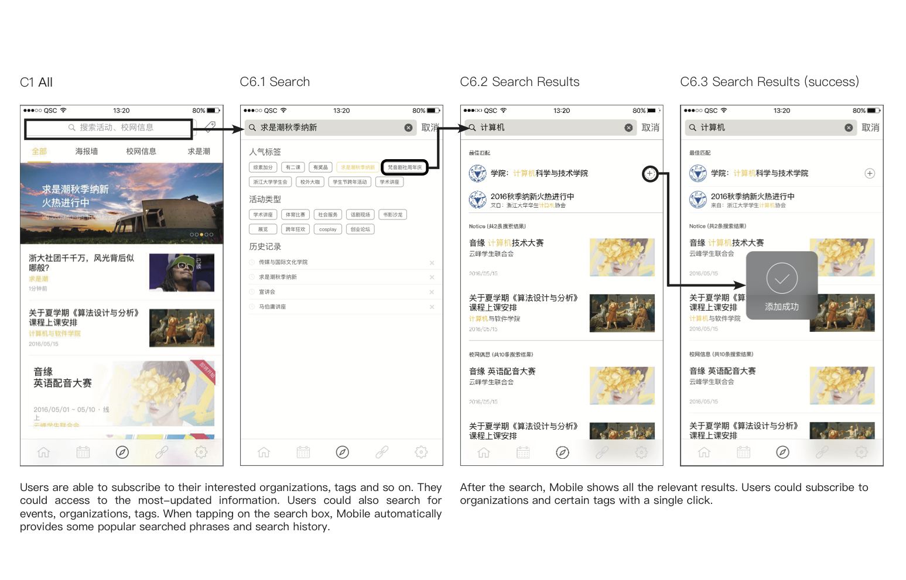
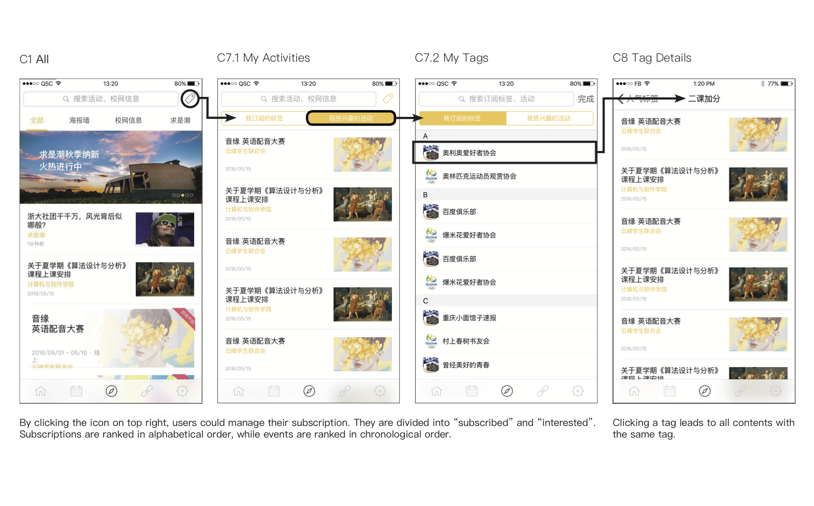
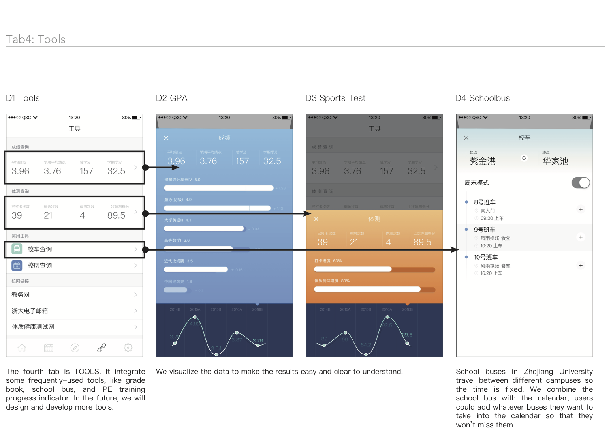
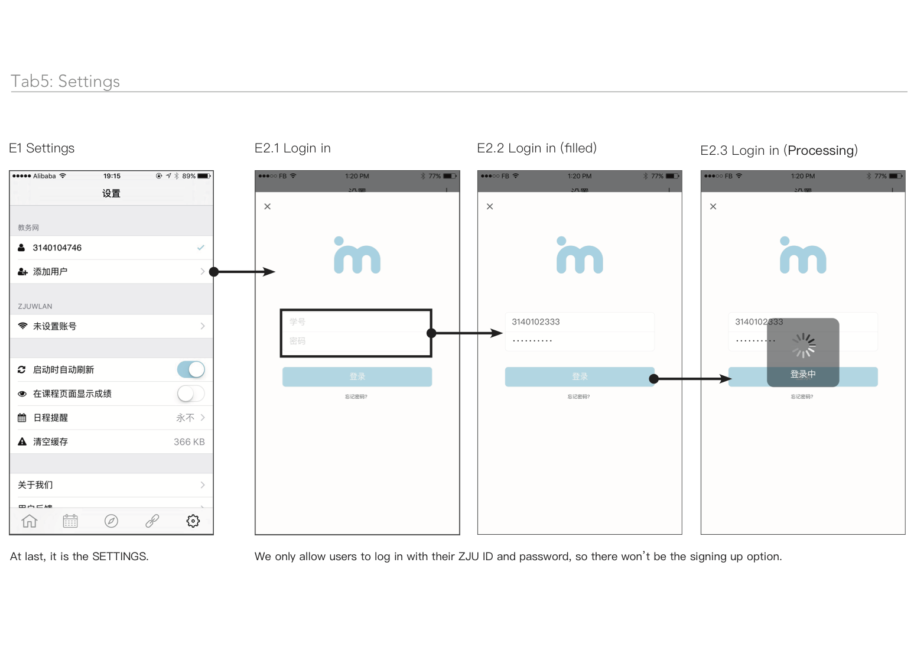
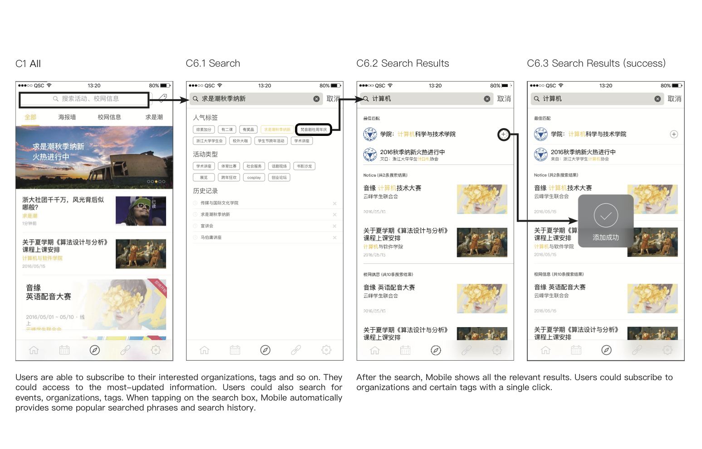
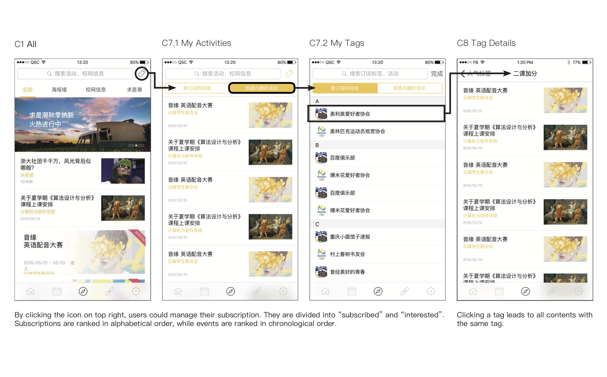
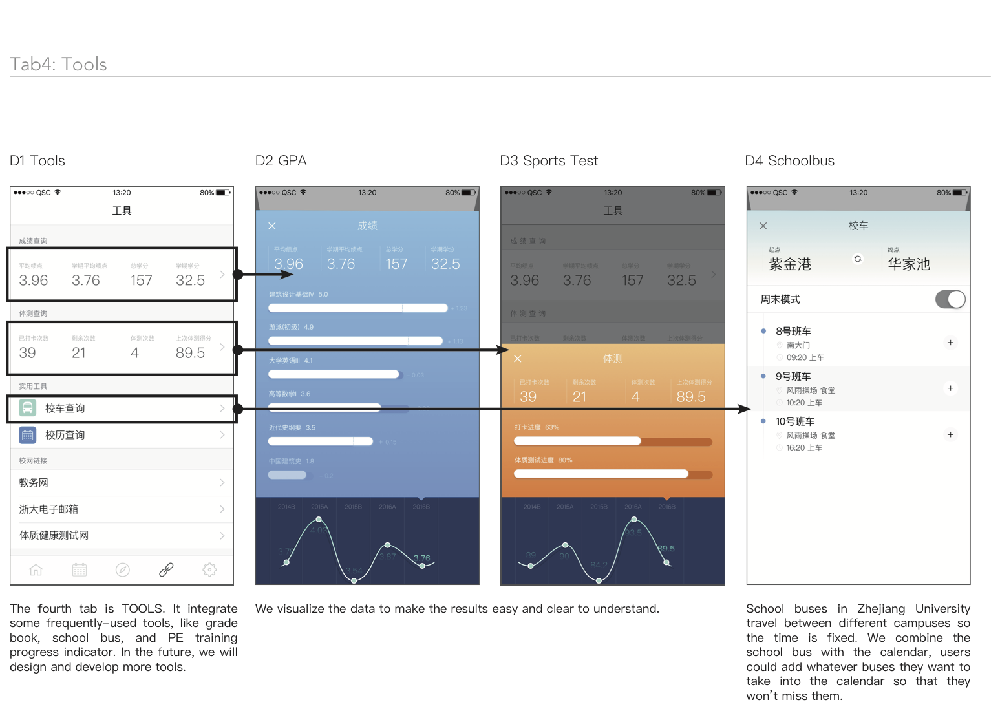
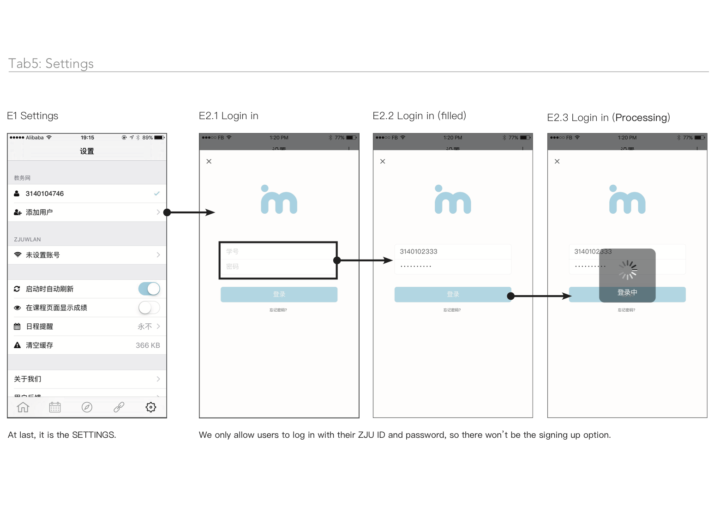

QSC Mobile
...the ONLY APP students need at Zhejiang University...

 Duration
Duration
2014-2015 @ QSC ( Student Portal of Zhejiang University )
Check it out on App Store 
My Role
As the Design Lead, I led user research and gathered other requirements from technology and school officials. After that, I was in charge of product design. With several iterations, I came up with information architecture, wireframes, and interaction. Later with my team, we designed interfaces and delivered the design documents.
Methods and Tools
User Research, Market Research, Persona and Scenario, Wireframing, Sketch
If you are a student at Zhejiang University, these are what go into your face every day: courses, timetables, exams, assignments, research programs, school buses... These just belong to a tip of the iceberg. All the information is located somewhere different. You only have two choices: either waste time to check all of them or, get lost.
Even if you manage to check out the information website frequently, you still miss fascinating on-campus events.

Now, you could change all of these by having a personal assistant in your phone, saving your the time and engergy to manage information that you need for school. This is QSC Mobile.
The home screen always shows your ongoing event with a countdown. Swiping right lets you see other upcoming events today.
You could view your calendar in different ways and glance your weekly course timetable. The calendar is synced with the official academic calendar and customized for Zhejiang University students.
It is the window opened up for you to get in touch with the colorful events on campus. You could add them to your calendar in one-click. You are also able to subscribe your favorite organizations and interested tags.
Whenever you want to check your progress of your physical training, your GPA, the school bus, they are always available.
The approach that we reached the final design is visualized below.

The two main pain points that we tried to tackle are what we’d heard time and again in qualitative user research:
QSC team has been dedicating itself to building a mobile solution to the problems of cumbersome information. Before I joined, the former team developed QSC Mobile. It was designed to be a one-stop shop of the most important information.
However, after interviews with typical users, reading reviews on APP store, I made the proposal to completely redesign Mobile instead of just making quick improvements. Finally, strong reasons to redesign QSC Mobile convinced the team.

There were various products on the market who shared the similar features with us. Among them, Super Timetable and My ZJU were two strong representatives.

In 2014, QSC had four main products:
Share: an online platform for sharing all kinds of resources.
Notice: an online platform announcing on-campus activities and official notifications.
Box: a service providing lightweight cloud storage. Users could download file anywhere with a passcode.
Mobile: previously introduced as an integration of the schedule of classes, exams, buses as well as grade books.

Among them, Mobile was the most popular one, while, Notice had pitifully few users. Why Notice was not well accepted when students felt isolated from on-campus events? Except from the fact that effort put into operation and promotion was less, interviews explained to us that students felt troublesome to take out their laptop and visit the website. And it was lighter and far more natural to check the events using smartphones.
Considering all of the information that students seek for school, we picked out information which were both important and frequently required through smartphones based off user research. The product forms of Share, Box, Notice were also sorted out.
Organizing so much irrelevant and relevant information together is the first obstacle. We need to strike the balance, which could let users quickly access what they want in the minimum steps while still keep all the information well organized. Below are the three proposed design concepts after the first round of brain storming and sketches.
Concept 1: This icon-based design with multiple cells improves the visual comprehension of the different inforamtion.
Concept 2: This Metro UI styled design lets the information and data become the visual elements and controls. Users see the important information on the homescreen directly.
Concept 3: This design with tab bars allows users to quickly navigate between important sections at the app level.
At first, we were pretty stuck here to decide which of the three we should go further with. A quick low-fidelity user testing saved us from the fights. Six users participated in our simple user testing with paper prototype and gave us comments. They mentioned that Concept 1 was mediocre and safe. Concept 2 showed a good practice for trying to show more on the homescreen. But as iOS users, they felt strange to see a window-styled UI. They gave us inspiration to add another tab to concept 3 to act as a homescreen, which display information itelligently in the scenarios.
When we drew the day of a typical user, we found the pattern. Students tend to seek for information about courses and homework when they are several minutes before or in class. And when they are free, they will take out their phone and explore what's happening. This pattern inspired us to design the homescreen in a different way.

In the proposed three concepts, the homescreen displays the ongoing events.
Concept 1 utilizes a typical calendar view. But in this calendar, Mobile recognizes and displays the important events (like exams, today's classes) and fold others. Also, it automatically suggests events based on users interest.
Concept 2 also shows the ongoing and important events with a piechart to indicate the progress and remaining days. Where there is no events going on, it will suggest users explore on-campus events and go to the third tab.
Concept 3 is similar to Concept 1. But everything is organized under category instead of on a timeline.
Finally we decided to choose Concept 2 because of technical issues. As a student organization, QSC doesn't have the ability to develop complicated algorithms used in Personalized Recommender Systems.
Below is the information architecture and the feature structure of the new QSC Mobile. We planned the structure in a way which could solve problems presented in the scenarios.

Below is the main interaction of Mobile.

For layout, we used tab bars which is a common practice of iOS Apps. Black and white are used the most because we defined Mobile as a personal assitant for students. Colorful interfaces would attract so much attention.
 







QSC is a student organization and every member works without pay at the spare time. So the development turns out to be very expensive. In this situation, as a designer, I must make sure that my design decisions are supported and my interfaces are pixel-perfect. Only in this case could our engineers dedicate themselves into a more efficient development process.
In our team, there is no product manager so that as the UX Lead, I took the responsibility partially. Apart from conducting user research, designing workflows and interfaces, I tried to understand the market and our competitors, communicated with engineers and staff of school, tried to understand the technical issus and guide the product through iteratations of the design. Finally, we made it to deliver this amazing product.
As a UX Designer, my role could be simplied to "problem solver". Whatever we are building, we're constantly making choices in the quest for the better solution. My favorite problem solving tool is to ask why again and again until I get to the root cause. I want to find the real reason why a problem happened rather than only treating the symptoms.
For example, when we found that students always missed the on-campus events, I questioned myself why this wasn't found out when designing the previous version.
And I sooned found out it was because of Renren (the social network once lauched as “China’s Facebook”) reaching its vanishing point, therefore, the most important channel to spread on-campus events was cut off.
Well, some people say that, "You still have Wechat! Students share Moments (Wechat's social network posts). Since most Moments friends are acquaintances, messages delivered by them can be more convincing."
Well, it sounds true. However, it's just because of friends are acquintances that people tend not to share posts frequently. Events shared by an organization will not go further from people who are in it.
There exist traditional channels to spread information like posters and banners around the campus, and campaigns on the Student Square. They have low exposure rates and cover just a small portion of students.
Sorting out the logic behind the problem gave me confidence when proposing the feature.